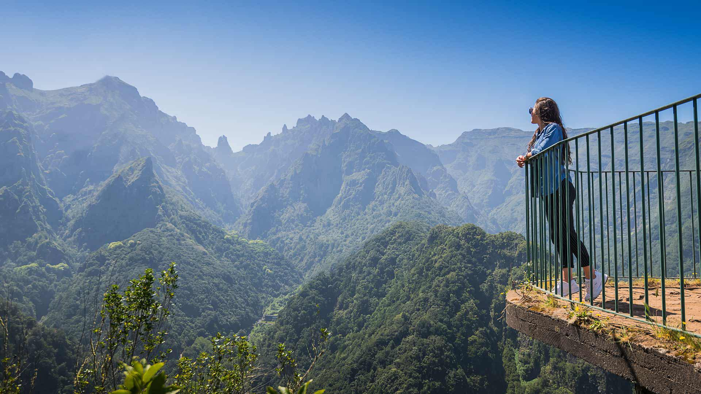

Madeira's East Coast
It was on Madeira's east coast that Gonçalves Zarco and Tristão Vaz Teixeira set ashore in 1419. Discover its charms!
View to the Atlantic and History
Madeira's east coast offers visitors the opportunity to enjoy moments of pure contemplation of unique and diverse landscapes. From its green hills that rise up by the sea to its more arid scenarios, with a vegetation consisting mostly of creepers, and the typical and bustling cities and towns we find in this area, there is much to explore here.
Discovering Madeira's east coast is a journey back to the early days of colonisation of this pearl of the Atlantic. It was in 1419 that Portuguese navigators João Gonçalves Zarco and Tristão Vaz Teixeira set ashore on the territory that today belongs to the municipality of Machico.
Besides this municipality, Madeira's east coast also includes the municipality of Santa Cruz. Interestingly, this area is still the main gateway to the Island, as this is where the Cristiano Ronaldo Madeira International Airport is located.
Towns with historical traditions, people and delicacies worth discovering, places where Nature reveals itself in all its magnitude, beaches, viewpoints and monuments: these are just some of the reasons why visitors to Madeira's east coast want to return here so soon. Come and discover it!
Where to go?
Machico
 Located on Madeira's east coast, approximately 22 km from Funchal, Machico is one of the most important municipalities in the Island's History. After all, it was here that discoverers Gonçalves Zarco and Tristão Vaz Teixeira set ashore in 1419. Today, it is known for its traditional villages, magnificent landscapes and beaches.
Located on Madeira's east coast, approximately 22 km from Funchal, Machico is one of the most important municipalities in the Island's History. After all, it was here that discoverers Gonçalves Zarco and Tristão Vaz Teixeira set ashore in 1419. Today, it is known for its traditional villages, magnificent landscapes and beaches.
Santa Cruz
 This municipality on Madeira's east coast is located 18 km from the archipelago's capital. It is a municipality marked by its deep relationship with the sea. It is, most of the times, travellers' first contact with the island, as the Cristiano Ronaldo Madeira International Airport is located here.